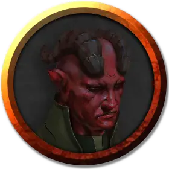

Джандар Чергоба
Jandar Chergoba
Средний Гуманоид (Тифлинг), законно-злой, именной НИП

Класс Доспеха 13 (кожаный доспех)
Хиты 33 (6к8 + 6)
Скорость 30 футов
| мод | спас | ||
|---|---|---|---|
| СИЛ | 11 | +0 | +0 |
| ЛОВ | 14 | +2 | +2 |
| ТЕЛ | 12 | +1 | +1 |
| мод | спас | ||
|---|---|---|---|
| ИНТ | 10 | +0 | +0 |
| МДР | 13 | +1 | +1 |
| ХАР | 14 | +2 | +2 |
Навыки Обман +4, Религия +2, Убеждение +4
Чувства тёмное зрение 60 футов, пассивное Восприятие 11
Языки Общий, Инфернальный
Опасность 2 (450 опыта)
Бонус мастерства +2
Особенности
Темная преданность. Джандар совершает с преимуществом спасброски от испуга и очарования.
Врождённое колдовство. Базовой характеристикой Джандара является Харизма. Джандар может накладывать следующие заклинания, не нуждаясь в материальных компонентах:
• Неограниченно: чудотворство [thaumaturgy].
Использование заклинаний. . Джандар является заклинателем 4-го уровня. Его базовой характеристикой является Мудрость (Сл спасброска от заклинания 11, +3 к попаданию атаками заклинаниями). У него подготовлены следующие заклинания жреца:
• Заговоры (неограниченно): свет, священное пламя, чудотворство;
• 1 уровень (4 ячейки): нанесение ран, приказ, щит веры;
• 2 уровень (3 ячейки): божественное оружие, удержание личности.
Действия
Мультиатака. Джандар совершает две рукопашные атаки.
Кинжал. . Рукопашная или дальнобойная атака оружием: +4 к попаданию, досягаемость 5 футов или дистанция 20/60 футов, одно существо. Попадание: Колющий урон 4 (1к4 + 2).
Описание
Шеф-повар виллы Кассалантеров. Джандар подбирает меню на каждый день и следит за работой кухни.
Джандар — мужчина-тифлинг, фанатик культа. Он часто бывает на кухне.